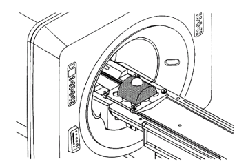
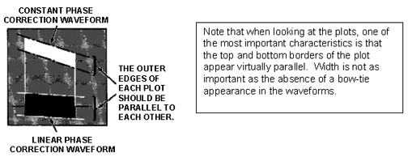
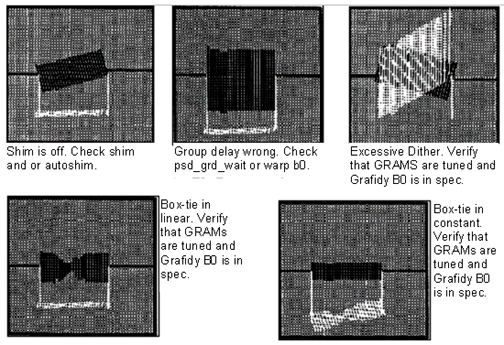
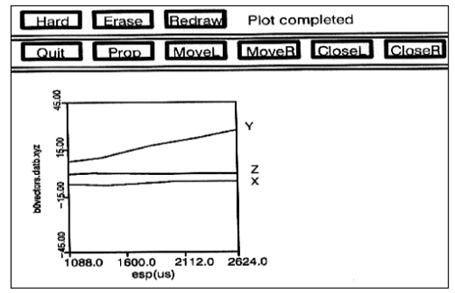

Operating Documentation
Direction 5133330-3, Rev# 14
Signa EXCITE HD 3.0T Service Methods
Module Version 1.0, Version Date 5/3/07
Operating Documentation |
| Required Persons | Preliminary Reqs | Procedure | Finalization |
|---|---|---|---|
| 1 |
| NOTE: | All EPI calibration procedure commands are case-sensitive. Failure to type the commands as shown in this procedure will cause the scripts to fail. |
| ||||
| POISON HAZARD! | ||||
| THE PHANTOM CONTAINS NICKEL, A SUSPECT CARCINOGEN. | ||||
| DO NOT INGEST. DISPOSE OF AS A HAZARDOUS WASTE ACCORDING TO STATE AND FEDERAL REGULATIONS. |
| NOTE: | Possible equipment damage. Completely remove the quad head coil from the cradle. Failure to do so will damage the head coil T/R network. |
Completely remove the Quad Head Coil from the cradle.
Locate one of the 100mm spherical phantoms (if necessary, remove one of the spheres from the phased array TLT phantom) and place it in the EPI foam positioner. See Illustration 1.
Illustration 1: EPI PHANTOM POSITIONING - BODY COIL

Landmark this phantom in the body coil using a Grafidy baseplate and the EPI foam positioner. See Illustration 1. The foam positioner places the phantom at isocenter in all three axes. Press <LANDMARK> and <Advance TO SCAN> buttons.
At the operator work space, prepare the system for a Body B0 Dither scan using the Service Protocols procedure located on the service methods CD-ROM.
For the TwinSpeed, use the starting window of the LVShim function in the SDM to create the correct link for the GradMode to be used. Select LVShim, highlight either WHOLE or ZOOM, confirm this with OK, and when in the C-Shell for the LVShim function, simply quit.
On the Service Desktop open two C Shell windows (click [C Shell] two times). Size and move the windows so that both can be viewed.
In one window, type cd /usr/g/bin <Enter>
Check for existing calibration files by typing ls -l *.esp.*<ENTER> (this will list the head and body group delay files). Next type ls -l b0_dither.*<ENTER> (this will list the head and body b0dither calibration files). Finally type ls -l b0vectors.dat.*<ENTER> (this will list out the head and body b0 vector files).
Optional step (to save old files); If calibration files exist on the system, copy them to backup files by typing the followings commands (Note: Substitute in a date code for date such as 9_29 for a file backed up on Sept 29 - i.e b0vectors.dat.head.9_29):
mv b0vectors.dat.head b0vectors.dat.head.date<ENTER>
mv b0vectors.dat.body b0vectors.dat.body.date<ENTER>
mv delay.esp.head dely.esp.head.date<ENTER>
mv delay.esp.body dely.esp.body.date<ENTER>
mv b0_dither.cal.head b0_dither.cal..head.date<ENTER>
mv b0_dither.cal.body b0_dither.cal..body.date<ENTER>
Remotely log into the TPS from the other window by typing in the commands:
rlogin`hostname`-tps<ENTER> (The quote marks around the word `hostname` is found to the left of the <1> key on the keyboard.)
Log into local (1) or remote (r) VxWorks console? local<ENTER>
VxWorks login: tps<ENTER>
password: tpsservice< ENTER>
--> pclog<ENTER> (Tells recon to create the ref_fitc.dat and ref_fitl.dat files)
--> pcgm<ENTER> ( puts recon into the EPI graph mode)
| NOTE: | When logged into the TPS, use <Ctrl> -H to delete a character and <Ctrl> -U to delete an entire line. |
Go back to the scan desktop and insure the scan protocol is loaded.
[Modify CVs] and verify the cv pw_gxwl2 = 0 (for the first scan only). A total of 30 scans will be taken. For each scan the cv pw_gxwl2 will be changed based on Table 1. Verify the cv exp corresponds to the appropriate pw_gxwl2 value for your equipment type.
Table 1: CV SETTING FOR PW_GXWL2
| pw_gxwl2 (uS) |
| 0 32 64 96 128 160 192 224 256 288 320 352 384 416 448 480 512 544 576 608 640 672 704 736 768 800 832 864 896 928 |
[Auto Prescan]
Press [Scan]. The system scans and creates a total of 3 image plots, (one for each plane). Compare the plots to the Typical Plot Examples (see Illustration 2 and Illustration 3. If plots look similar to the typical plots shown, continue on to the next step. Otherwise, for Troubleshooting Tips, see Illustration 4.
Illustration 2: EXAMPLE TYPICAL (GOOD) B0 PLOTS

Illustration 3: UNDERSTANDING EPI CALIBRATION PLOTS

Illustration 4: EXAMPLE OF (BAD B0) PLOTS WITH TROUBLESHOOTING TIPS

After scan #1: execute the command b0 d<ENTER> from the non-TPS command window. This generates the b0vectors.dat and delay .esp files. For scans #2-8 if the plots are acceptable, execute the command b0<ENTER> (Not b0 d, as this will delete your previous work). This will append data to the files b0vectors.dat and delay.esp. Go back to step 8 of this procedure until all 8 scans are complete.
After scans for all values for pw_gxwl2 setting have been collected, execute the following from the C Shell window: fitepic<ENTER> (Accept the default field name of b0vectors.dat when prompted). This creates the file b0_dither.cal. (This takes several minutes per axis to run, so be patient.)
The program then analyzes the b0 vector data. As each axis is analyzed, a series of numbers is output to the screen. Record the Max. Error value for each axis for future ref.
From the non-TPS command window, rename the b0vectors.dat, delay.esp, b0dither.cal and plot files to make them body specific files before proceeding to Group Delay calibration:
mv b0vectors.dat b0vectors.dat.body<Enter>
mv delay.esp delay.esp.body<Enter>
mv b0_dither.cal b0_dither.cal.body<Enter> (Type carefully; this is the file the psd uses!)
mv b0vectors.dat.xyz b0vectors.datb.xyz< Enter>
| NOTE: | For TwinSpeed, remember that these actions move linked files with extensions, .WHOLE and .ZOOM. |
Display plots of the b0vectors.dat on the system screen by typing each plot command. (The plots may slope considerably or have a high offset, but each axis plot should look fairly smooth. For example, see Illustration 5).
pl -b0vectors.datb.xyz q<Enter> (Plots the body b0 dither Vs echo spacing for all 3 axes.)
pl -delay.espb.xyz q<Enter> (Plots the body gldelay Vs echo spacing for all 3 axes.)
pl -delay.fst.xyz q<Enter> (Echo speed system only! Plots the group delay Vs bandwidth.)
Illustration 5: EXAMPLE B0 DITHER DATA PLOT

Complete the remaining parts of the EPI B0
Group Delay Characterization (in this document).
Head B0 Dither Calibration (in this document).